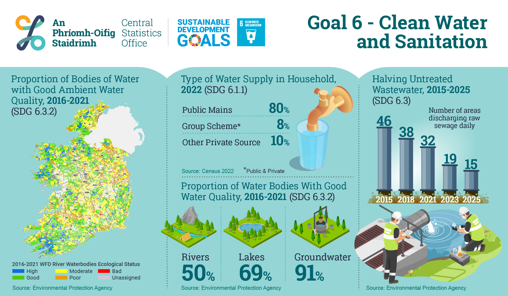

Understanding the Numbers
Many people still lack access to safely managed drinking water and basic sanitation services. Looking at data helps identify where support is most needed and which areas are most at risk.
Clean water is something many people assume will always be there, but a lot of communities still do not have steady access to it. SDG 6 focuses on safe water, decent toilets and good hygiene for everyone. This website gives a simple overview of the main targets.
Small actions can help, such as reporting leaks, avoiding littering near rivers and using water carefully at home. The aim here is to give classmates and local groups a clear starting point on what they can do.
Many people still lack access to safely managed drinking water and basic sanitation services. Looking at data helps identify where support is most needed and which areas are most at risk.
Rivers, lakes and wetlands support wildlife, filter water naturally and help protect against flooding. Protecting these areas supports SDG 6 and helps keep communities safer.
Local residents often spot problems first. Reporting leaks, broken pipes or rubbish near streams can stop small issues from becoming serious. The contact page includes a simple form to record these concerns.